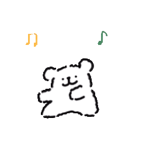

摄像头初始化中…
小狗在等你 🐶
🐶 玩法说明
伸出
食指 ☝️
，让小狗看到你
移动指尖，小狗会
追着跑
停下来不动，小狗会
嗅嗅闻闻
指尖太靠近它，小狗会
兴奋打转
看不到手时，小狗会
坐下等你
提示：保持距离 0.5–1.5m，光线充足效果最佳～
🎾 玩球设置
玩球模式
关闭
🎾 球初速度倍率
1.0
🌍 重力强度
0.45
🏀 弹跳衰减
0.55
🐕 小狗追球最大速度
28
📐 安全区比例
80%
🎲 扔偏概率
5%
✋ 抛球手势灵敏度
0.50
恢复默认
✓ 确定保存
🐶
小狗正在赶来…
连接 AI 模型中…
首次加载需下载约 13MB 模型，耐心等几秒哦 ✨